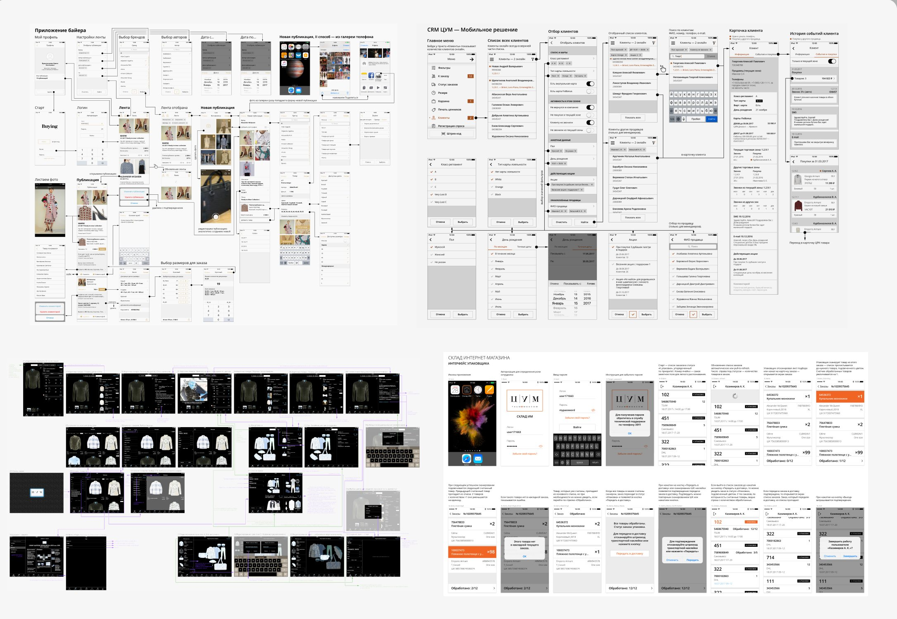
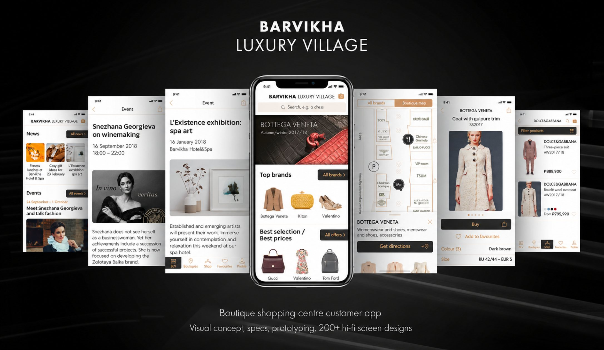
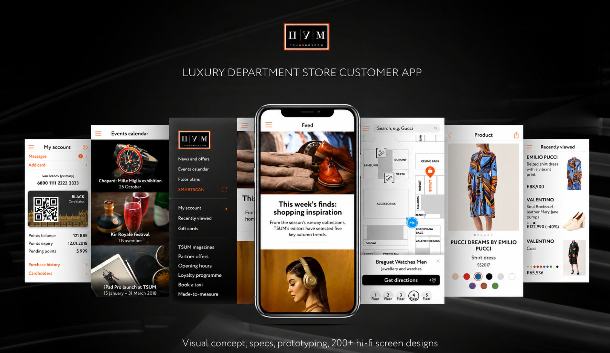
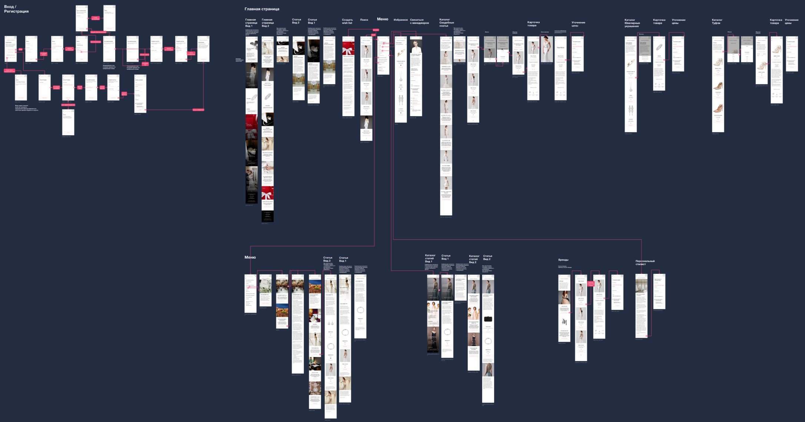

Sales automation apps for luxury fashion retail
The problem
TSUM is Moscow’s signature luxury department store: more than 110 years old and, at 70,000 m², the largest department store in Eastern Europe, carrying brands from Dior and Chanel to Rolex and Baccarat. Alongside the store, it runs standalone boutiques for multiple brands.
Its success relies on the personal connection between customers and style assistants on the shop floor, so any new tool had to support those conversations rather than get in their way.
The solution
A family of iOS apps for style assistants, warehouse and delivery teams. Together they support every step of in-store service: style suggestions, stock lookup, indoor navigation and checkout on iPod touch, so customers can pay right from the fitting room without breaking the experience.
My role
As UI designer and business analyst, I designed an ecosystem of 17 bespoke apps for sales, warehouse and delivery staff, including the country’s first iOS-based mobile payment terminal. For customers, I designed two loyalty apps, a navigation app for a boutique shopping village and indoor navigation for a multi-level department store.
Day to day, I gathered business requirements, wrote specs for developers, built prototypes and hi-fi designs, and kept the needs of the business, its users and the tech teams in balance.
Results
- of the customer journey optimised
- 80%
- iOS apps for sales, warehouse and delivery staff
- 17
- of devices making thousands of product queries a day
- 100s
- mobile checkout on iOS in the country
- 1st
Process highlights: Contextual inquiry to understand physical context
Store and section managers were enthusiastic about giving assistants iPads for client conversations. But on the shop floor, assistants were constantly on the move: carrying garments, managing fitting rooms, packing purchases. They simply had no hands free for a tablet.
So instead of one feature-rich tablet app, we designed a suite of lightweight, role-based workflow “slices” on iPod touch, giving assistants just-in-time functionality within the natural flow of their work. We even measured assistants’ pockets to prove the hypothesis: an iPod touch fits in every one.
Tablets still had their place. For interior design collections, where consultations are seated and unhurried, we designed a big-screen iPad app instead: the right device for each context.
Process highlights: User testing
Testing surfaced three lessons:
— Match the real world: assistants didn’t recognise the “Reserve” feature, because on the floor everyone called it “lay-by”. “Reserve” was only the status name in the back-end database.
— Small shortcuts matter: even a quick action like clearing an input field saved a lot of time when repeated all day.
— You are not the user, and neither is your stakeholder: the floor manager’s view of the job was not the store assistant’s.
Replacing paper and the backroom PC
Almost every old workflow had the same step: walking to the backroom PC. Each app took one of those trips, and the paperwork around it, onto the shop floor.
| App | What it does | What it replaced |
|---|---|---|
| Pocket salesperson’s assistant | Stock, sizes, similar items and reservations, on an iPod touch in every assistant’s pocket | Reserving items on paper, checking sizes by hand, trips to storage, customers waiting for options |
| Cashdesk that follows the customer | Payment, returns, receipt printing and parking validation anywhere in the store | Queues, a limited number of cashiers, separate loyalty card and parking payments |
| Big screen for interior design collections | Catalogues, shop transfers and customer wish lists on iPad for 9 shops, including Baccarat, Daum & Lalique, Gallery Royal and Fabergé | Paper catalogues, checking they were up to date, customers remembering their choices |
| Connection with loyal customers | Detailed customer profiles, purchase and event history, personal preferences | Profiles in the desktop ERP, Excel reports, paper call lists, preferences recorded by hand |
| Online order delivery | Delivery routes and orders, sales and PLU confirmations, payment and loyalty | Paper invoices and route lists, comparing stickers, checking items by hand |
| Distribution for delivery | Every online order checked with a scanner | Printing delivery papers, paper invoices, looking for storage cells |
| Packing | One scanner button to pack an order, with an iPod touch and scanner kit for all storage room staff | Paper packing lists, filling in papers by hand, checking item lists |
| White-label boutique apps | Apps for independent boutiques such as Brioni, Loro Piana, Valentino, Dolce & Gabbana and Ralph Lauren: separate databases and business processes, one development and support system | Each boutique running its own separate processes |



